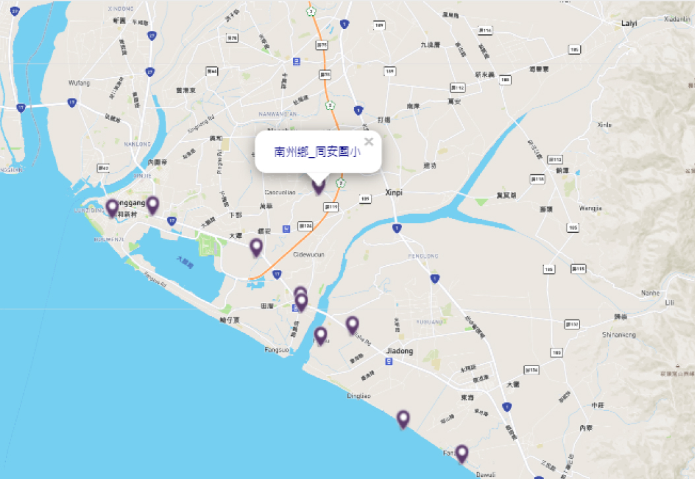

資料中斷列表
| 物理量名稱 | 完整名稱 | 用途說明 |
|---|---|---|
| 運作狀態 | 龜山B2電壓 | 電壓 |
| 運作狀態 | 龜山B3電壓 | 電壓 |
| 運作狀態 | 抽水機震動次數 | 執震動次數行長 |


東港鎮_東港派出所
| 建置日期 | 2021/03/01 |
|---|---|
| 測站代號 | 3132017FL4009 |
| 座標 經度E | 120.74548 |
| 座標 緯度N | 21.99593 |
當前物理量
交流電壓 V
| 名稱 | 數值 | 量測時間 |
|---|---|---|
| 濟公廟A2電壓 | 1234567890 | 2021/05/07 13:58:00 |
| 濟公廟B2電壓 | 1234567890 | 2021/05/07 13:58:00 |
| 濟公廟B3電壓 | 1234567890 | 2021/05/07 13:58:00 |
傳輸訊號強度 dbm
| 名稱 | 數值 | 量測時間 |
|---|---|---|
| 濟公廟B3 SNR | 1234567890 | 2021/05/07 13:58:00 |
| 濟公廟A1 RSSI | 1234567890 | 2021/05/07 13:58:00 |
沖刷深度 m
| 名稱 | 數值 | 量測時間 |
|---|---|---|
| 濟公廟 004-200cm 沖出深度(預警) | 1234567890 | 2021/05/07 13:58:00 |
| 濟公廟 002-200cm 沖出深度(警戒) | 1234567890 | 2021/05/07 13:58:00 |
運作狀態
| 名稱 | 數值 | 量測時間 |
|---|---|---|
| 濟公廟B2狀態(埋回) | true | 2021/05/07 13:58:00 |
| 濟公廟B3狀態(埋回) | false | 2021/05/07 13:58:00 |